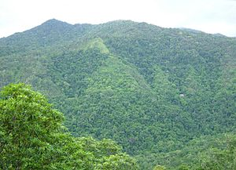
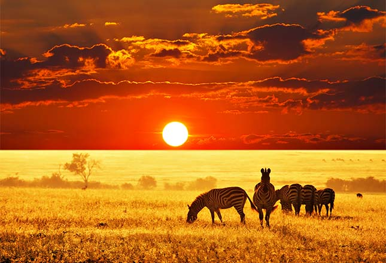
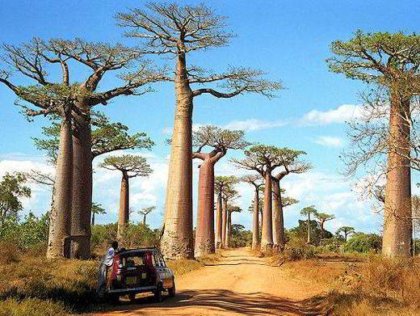
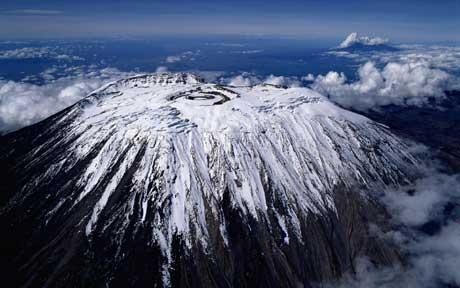
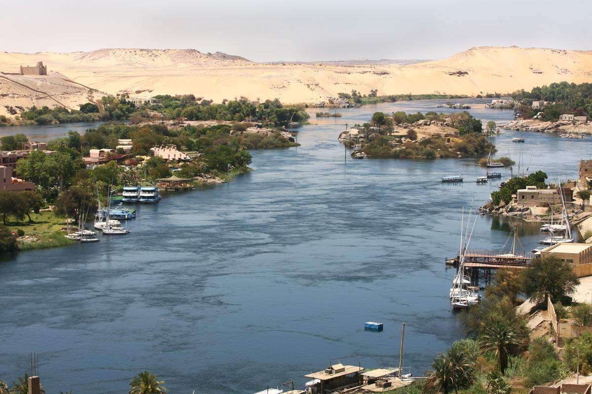

Afrika földrajza az afrikai kontinens fizikai adottságainak, valamint az általa biztosított élettér és élőlényeinek egymásra tett hatásait takarja.
Az egyenlítő környékén a Kongó-medence, valamint a Guineai-öböl partvidékén, illetve Madagaszkár keleti tengerpartján található trópusi esőerdő.
A Kongó-medence után a Föld második legnagyobb esőerdeje.
A trópusi esőerdőt nagyon sűrű növényzet, szinte járhatatlan erdők, fokozatosan újuló levélzet jellemzi.
A szavannának több fajtája megtalálható Afrikában, a csapadéknak megfelelően
Van nedves vagy magasfüves szavanna, száraz vagy alacsonyfüves szavanna, tüskés szavanna
A nedves szavannát a lombhullató erdő jellemzi, amely az esőerdőnél alacsonyabb és kevesebb fajból áll és üde aljnövényzettel rendelkezik.
Madagaszkár szigetének területe 587 041 négyzetkilométer, és ezzel a világ negyedik legnagyobb szigete
Az országhoz továbbá számos kisebb sziget is hozzátartozik. Madagaszkár korán elvált az ősi Gondwana kontinenstől, illetve annak afrikai részétől, és az élővilág ezután elszigetelten fejlődött. Az itt élő fajok 90 százaléka endemikus élőlény
Földrajza rendkívül változatos, legmagasabb pontja a Kilimandzsárómelynek magassága 5895 méter, ugyanakkor a Szahara sivatagos területe 90-szer nagyobb hazánkénál.
Leghosszabb folyója a Nílus (6695 kilométer, egyben az Amazonas után a Föld második leghosszabb folyója)
Neve az ókori Egyiptomban Hápi volt. A kőkor óta alapvető szerepet töltött be az egyiptomi kultúrában.
Két fő forrásága van, a Fehér-Nílus és a Kék-Nílus. Az utóbbiból származik a Nílus vizének többsége, azonban az előbbi a hosszabb.
